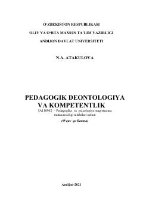

PDMagistrantlar uchun pedagogik deontologiya va kasbiy kompetentlik asoslarini o'rgatuvchi o'quv qo'llanma.
Ushbu o'quv qo'llanma pedagogika va psixologiya magistratura mutaxassisligi talabalari uchun mo'ljallangan bo'lib, pedagogik deontologiya va kompetentlikning nazariy asoslari, kasbiy etika va o'qituvchi shaxsining axloqiy me'yorlarini yoritadi. Kitobda zamonaviy ta'lim jarayonida o'qituvchining kasbiy va shaxsiy o'sish traektoriyalari, deontologik tamoyillar hamda kompetentlik sifatlarini rivojlantirish masalalari tahlil qilingan. Shuningdek, talabalarda kasbiy burch va pedagogik madaniyatni shakllantirish bo'yicha ilmiy-uslubiy tavsiyalar berilgan.